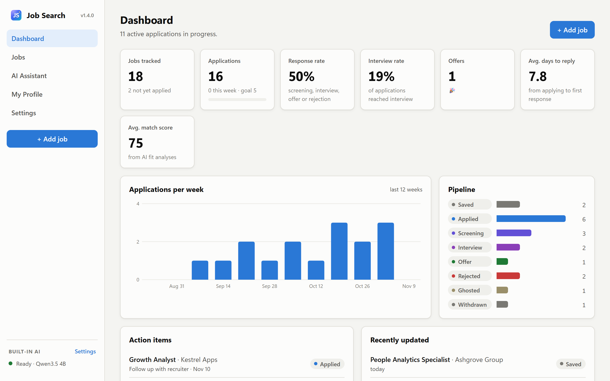
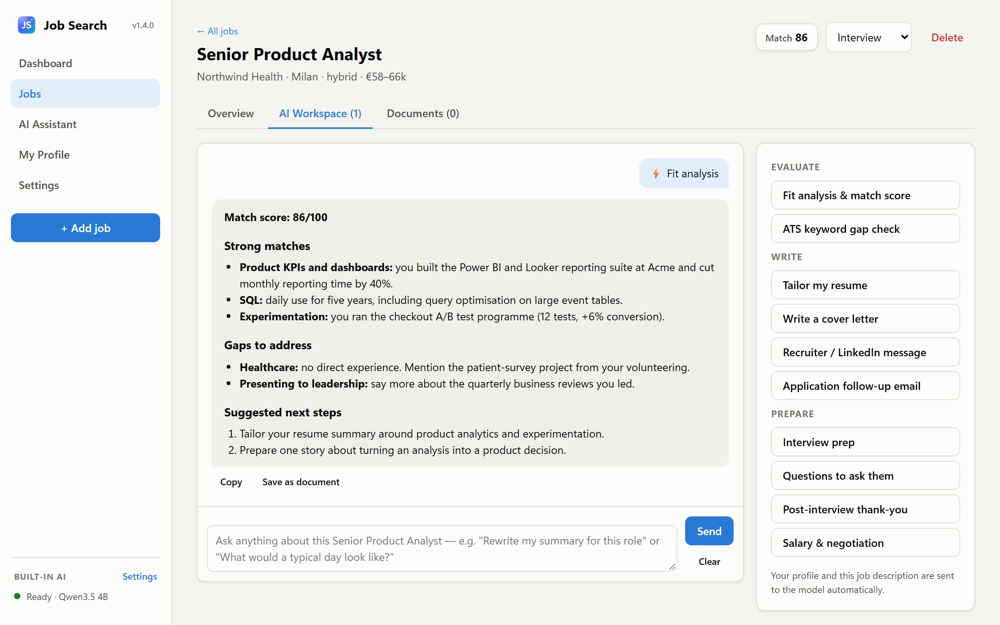

Your job search, on your own computer.
Track every application, and let an AI that runs on your computer tailor your resume, write cover letters and prepare you for interviews. Free, with nothing you write sent to the internet.
For Windows 10 and 11, and Macs with macOS 13.5 or newer.

Every job moves through the same steps. The dashboard shows where each one stands and what to do next.
- Saved
- Applied
- Screening
- Interview
- Offer
Help with every application
- Paste a job, get the details
- Paste a job description, or load it from a PDF or Word file, and the AI fills in the title, company, salary and key skills.
- Know how well you fit
- A match score with your strengths and gaps for the role, plus the keywords your resume is missing.
- Write it in minutes
- A tailored resume, a cover letter, recruiter messages, follow-up and thank-you emails, interview questions and salary advice, all based on your real experience.
- Built-in AI, or your own
- One click sets up an AI that runs on your computer and works offline. Already use LM Studio? Pick it instead.

Private by design
Your data stays with you
Jobs, documents and your resume are saved on your computer. There's no account to create and no server of ours.
The AI runs on your computer
Your resume and the job descriptions are processed locally, by the built-in AI or LM Studio.
Sync only if you want it
To use more than one computer, sign in with Google. Your data goes to a hidden app folder in your own Google Drive, and nowhere else.
Install
Windows
- Download JobSearchDashboard.exe and double-click it.
- If Windows shows "Windows protected your PC", click More info, then Run anyway. This appears because the app isn't code-signed.
- Choose how the AI runs. The built-in AI downloads once, about 2.6 GB.
New versions install from inside the app.
Mac
- Download the zip, open it, and drag Job Search Dashboard into Applications.
- Open it. The first time, macOS blocks it because the app isn't registered with Apple. Go to System Settings, Privacy & Security and click Open Anyway.
- Choose how the AI runs. On Macs with Apple Silicon the built-in AI uses the GPU.
Stuck? See the Mac install help.